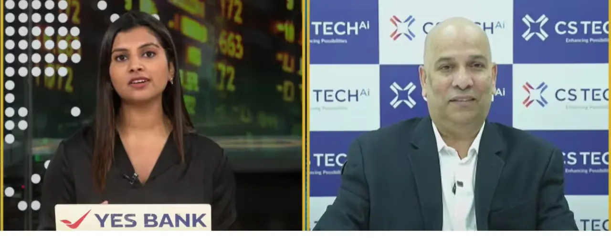

Pune, India – 5th September 2025
In a recent interview with NDTV Profit, Mr. Prashant Kamat, Vice Chairman and CEO of CS TECH Ai, shared insights into the company’s strong execution momentum, expanding global footprint, and long-term growth strategy across geospatial, AI, and digital infrastructure solutions.
Strong Order Book and Execution Visibility
Mr. Kamat highlighted CS TECH Ai’s robust order book of nearly ₹1,200 crore, supported by a steady quarterly run rate of approximately ₹156 crore. Recent project wins, including a key assignment from MMRDA for monitoring Mumbai Metro construction, further reinforce the company’s execution capabilities.
Beyond individual wins, the leadership emphasized strong visibility across the order pipeline, positioning the company well for sustained growth.
Jal Jeevan Mission and Domestic Growth Outlook
Addressing concerns around delays in the Jal Jeevan Mission (JJM), Mr. Kamat clarified that the slowdown was a temporary pause rather than a structural issue. CS TECH Ai’s pioneering work in Maharashtra, India’s first state to integrate technologies such as IoT in water infrastructure, has strengthened the company’s “right to win” similar projects across other states.
Importantly, the company’s domestic pipeline is not dependent solely on JJM. Growth is also being driven by geospatial analytics, large-scale data processing, and digital infrastructure programs, significantly widening opportunity size within India.
Scaling International Presence Through the US and Europe
On the international front, Mr. Kamat outlined CS TECH Ai’s focus on the US and European markets, which represent the largest share of the global B2B geospatial services opportunity, estimated at approximately $750 billion.
Following a strategic tuck-in acquisition in the US, the company has expanded both its local sales presence and delivery capabilities, resulting in visible traction. CS TECH Ai is actively evaluating two to three additional acquisitions in the US and Europe to accelerate market access, strengthen customer relationships, and expand service offerings.
Capital Deployment and Acquisition Strategy
The company’s recent fund raise of ₹105 crore, along with additional capital expected by FY26, is primarily earmarked for strategic acquisitions, while also supporting the expansion of delivery capacity. This balanced capital allocation reflects CS TECH Ai’s focus on long-term value creation rather than short-term expansion.
Margin Expansion Driven by Digital and AI Capabilities
Mr. Kamat noted a significant shift in business mix, with technology-led solutions now contributing over 50% of revenue. These offerings, particularly in AI, digital twins, and advanced analytics, carry higher margins compared to traditional services.
While overseas acquisitions may initially moderate margins, the company expects organic margin expansion over time, supported by digital-first capabilities and operational scale.
Improving Working Capital Through Private Sector Growth
CS TECH Ai currently operates with a 70:30 government-to-private business mix, which management aims to gradually reverse over the next two to three years. While margins across government and private clients remain comparable, an increased private-sector share is expected to significantly improve collections efficiency and working capital cycles, given faster payment timelines.
Long-Term Growth Outlook
Without issuing forward-looking numerical guidance, Mr. Kamat expressed confidence in maintaining historically consistent growth rates, supported by a strong order book, expanding global presence, and increasing contribution from high-margin digital services.
Market Perspective
Market experts participating in the NDTV Profit discussion echoed confidence in the company’s fundamentals, highlighting CS TECH Ai’s strong balance sheet, execution track record, and long-term growth visibility.